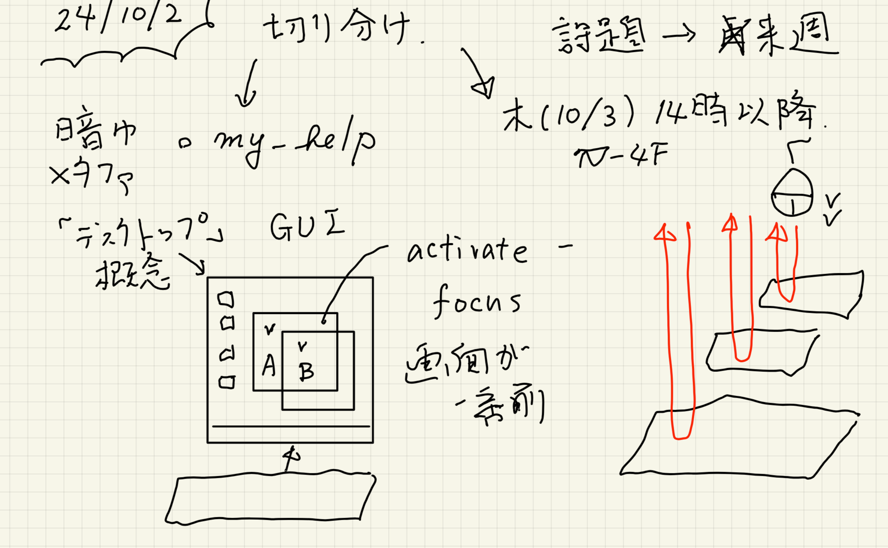

todo for multi_scale
Table of Contents
1. ssh_git/readme.html
2. w2_my_help_emacs/readme.html
3. w1_introduction/readme.html
1.
ssh_git/readme.html
2.
w2_my_help_emacs/readme.html

3.
w1_introduction/readme.html
Author: Shigeto R. Nishitani
Created: 2024-10-05 Sat 12:00
Validate